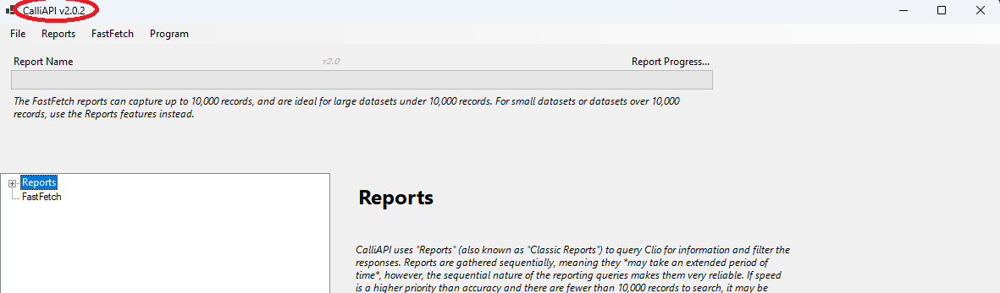

Click the Install button below to install the latest version of CalliAPI.
Install CalliAPITo install CalliAPI, follow the instructions below:
Once CalliAPI has downloaded, click the Downloads icon (usually an arrow at the top right of this page).
Step 1. If you have an error icon, such as shown here, click the three dots and then Keep.
Step 2. You'll likely receive this notification, with the options to Cancel or Delete. Instead, click Show more.
Step 3. Click Keep anyway to tell Microsoft you want to keep CalliAPI.
Step 4. Click Open file to open the Setup executable. If you don't see it, click the Downloads icon again and click the file.
Step 5. If you have CalliAPI installed, you will see a Repair option. Click Repair to repair your installation.
If you do not see this pop-up, continue with the installation as normal.
Check the top left corner of the screen to verify you are on the proper version of CalliAPI. If so, you are complete and good to go.
If you run into any issues in this setup, reach out to us at support@amourgis.com. Please clearly detail the issues you're experiencing.
If the install button doesn't work, you can download the full installer package (ZIP) and run setup.exe manually.